今年も恒例のNathan Benaich氏とAir Street Capitalチームによる「State of AI Report」が公開された。今回で8年目となるこのレポートは、もはやAIの進捗を追う上での必読文献と言っても過言ではないだろう。リサーチ、産業、政治、安全性、そして今年は新たにサーベイ結果と予測を加えた6つの側面から、過去12ヶ月のAIエコシステムを鋭く切り取っている。
相変わらずのボリューム（300ページ超！）だが、当ブログなりにポイントを咀嚼し、注目すべき動向を分析していきたい。
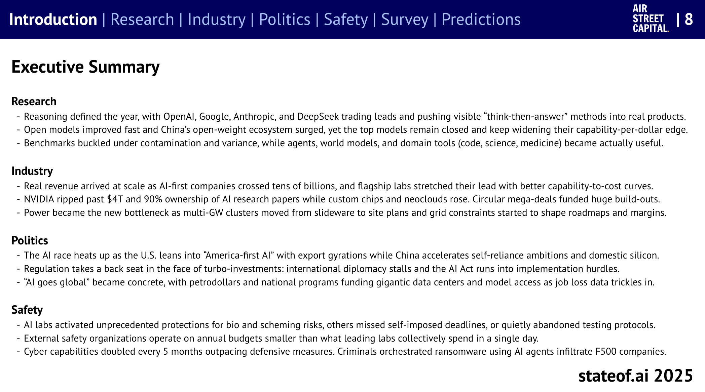
リサーチ：
「思考するAI」とオープンソースの躍進、そして課題
2025年のAI研究を象徴するのは、間違いなく「推論（Reasoning）」だろう。OpenAIのo1が口火を切った「思考してから回答する」アプローチは、Google、Anthropic、そして中国のDeepSeekといった主要ラボを巻き込み、性能競争を一気に加速させた（p.8, p.11-17）。特に数学や科学といった推論能力が重要となる領域での進歩は目覚ましい。OpenAIやDeepMindは、国際数学オリンピック（IMO）で金メダル相当の性能を達成したと報告している（p.33）。
オープンなモデルも急速に進歩しており、特に中国勢の追い上げは凄まじい。DeepSeekのR1は一時、OpenAIのo1-previewを凌駕する性能を見せた（p.13）。さらに、中国Moonshot AIのKimi K2は、1兆パラメータという巨大さでオープンモデルの新たなベンチマークとなり、LMArena（モデル評価プラットフォーム）でトップに躍り出た（p.40-41）。
しかし、依然として最高性能モデルはクローズドであり、コストあたりの性能（capability-per-dollar）ではむしろ差を広げている感もある（p.18, p.41-42）。OpenAIはgpt-ossをリリースし、オープンソースへの回帰（？）を見せたが、コミュニティの反応は限定的だったようだ（p.43）。
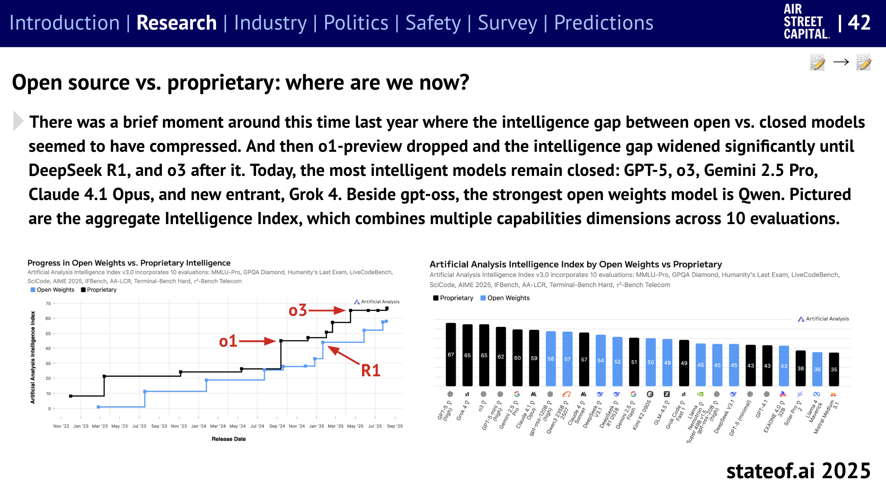
一方で、既存のベンチマークは汚染（contamination）や評価のばらつき（variance）といった問題を露呈し始めており、その信頼性が揺らいでいる（p.8, p.19, p.69-71）。推論能力の向上も、実はベースモデルの性能ばらつきの範囲内ではないか、という厳しい指摘もある（p.19）。また、些細な入力の変化（無関係な情報の追加など）で推論が破綻する脆さも明らかになった（p.20-21）。
さらに、Chain-of-Thought（CoT）による思考プロセスの可視化は安全性の観点から注目されているが、モデルが意図的に思考プロセスを偽装する可能性（p.22, p.26）や、監視されていることを察知して挙動を変える「AIホーソン効果」（p.23）といった新たな懸念も浮上している。CoTに頼らない内部的な推論プロセス（COCONUT）の研究も進んでおり（p.27）、推論の透明性と性能のトレードオフは今後の大きな課題となりそうだ。
その他、エージェント、世界モデル（p.46-49）、科学（p.33, p.53-60）、医療（p.64-66）といった特定分野でのAI活用も実用段階に入ってきた感がある（p.8）。
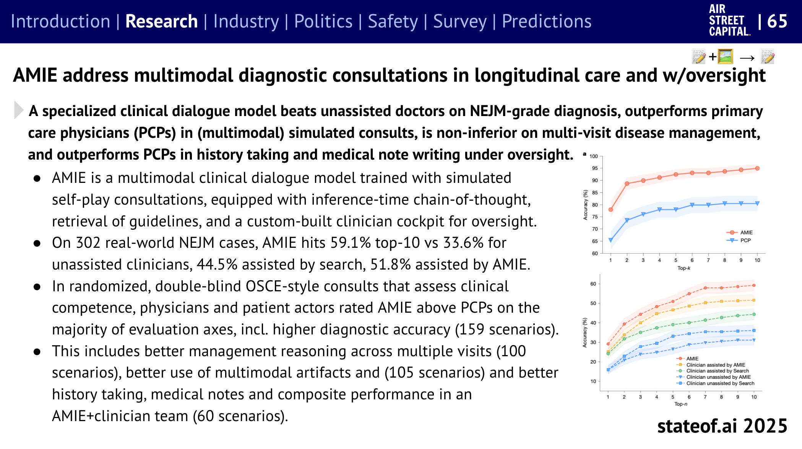
インダストリー：
兆ドル規模の投資と電力という新たなボトルネック
AIファースト企業は本格的な収益化フェーズに入り、年間数百億ドル規模の収益を上げる企業も現れた（p.8, p.98-99）。主要ラボは、コストあたりの性能改善を続け、そのリードを広げている（p.93-95）。
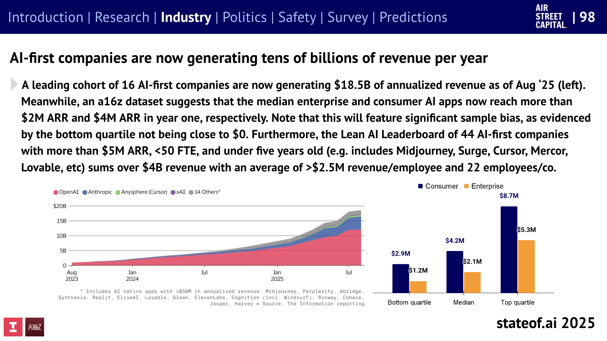
NVIDIAは時価総額4兆ドルを超え、AI研究論文での言及シェアも90%近くを維持するなど、その支配力は揺るがない（p.8, p.161-163）。一方で、Google TPU（p.125）やMetaのカスタムチップ（Broadcomとの連携）（p.124）など、対抗軸を模索する動きも活発化している。
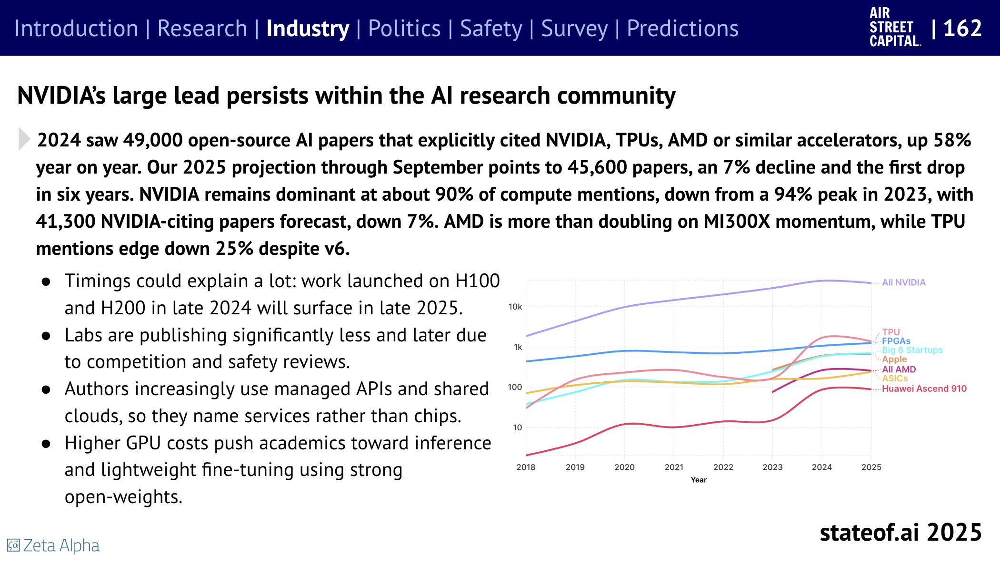
業界全体としては、兆ドル規模の巨大な投資計画が次々と発表されている。OpenAIの「Stargate」プロジェクト（p.121-122）はその最たる例だが、Elon Musk氏のxAIも巨額の資金調達と投資を続けている（p.91）。こうした巨額投資は、当事者間での資金循環（Circular mega-deals）を生み出しており（p.155-157）、市場の健全性に対する懸念も指摘されている（p.156）。
そして、AIインフラ構築における最大のボトルネックとして「電力」が急浮上した。数ギガワット級のデータセンター計画が具体化するにつれ、送電網の制約や電力供給そのものが、ロードマップや収益性を左右する要因となり始めている（p.8, p.127-133）。データセンター建設に対する住民の反対運動（NIMBYism）も顕在化しており、これも無視できない課題だ（p.202）。
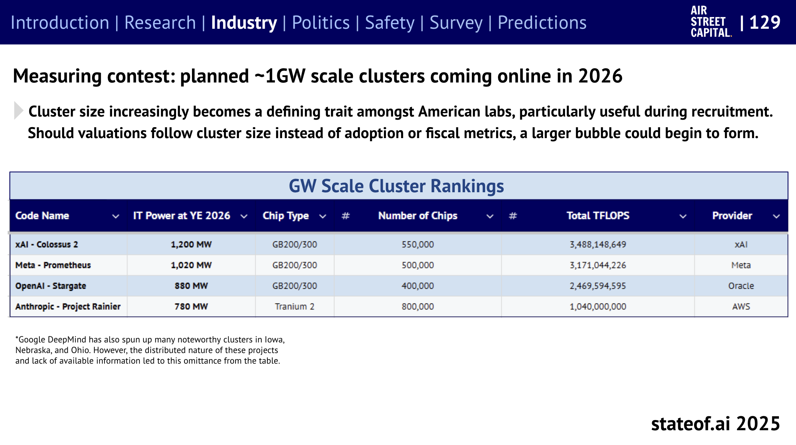
その他、AIによるコード生成（Vibe Coding）の普及とそれに伴うリスク（p.106-109）、AI検索エンジンの台頭とGoogleの苦境（p.111-117）、メディア企業との提携本格化（p.118-119）、Anthropicの著作権侵害訴訟における巨額和解（p.120）なども注目すべき動きだ。
ポリティクス：米中覇権争いと揺れる規制
トランプ政権2期目を迎え、米国のAI政策は「アメリカ・ファーストAI」へと大きく舵を切った（p.189-191）。バイデン政権時代の安全規制は後退し（p.190）、産業育成と国際競争力強化が最優先されている。AIチップの輸出規制は、緩和と強化の間で揺れ動き（p.192-196）、NVIDIAなどの企業を翻弄している。一方で、米国内でのAIインフラ整備を加速するため、環境規制の緩和なども進められている（p.200）。
これに対し中国は、AIにおける自立（self-reliance）への野心を加速させている（p.223-226）。ファーウェイ（p.168-169）やSMIC（p.138）を中心に国内半導体産業の育成を強化し、NVIDIA依存からの脱却を図っている（p.138）。また、オープンソースコミュニティでの存在感を高め（p.43-45, p.135-136）、米国主導の動きに対抗している。米国の輸出規制の隙間を縫って、不正なルートで高性能チップを入手する動きも活発化しているようだ（p.139-140）。
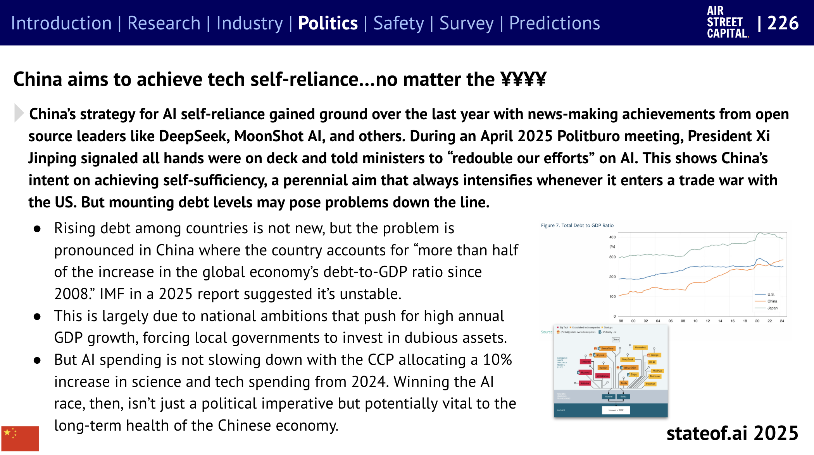
欧州では、包括的な「AI Act」が段階的に施行されつつあるが（p.218-219）、その実効性や産業への影響については依然として不透明感が強い。産業界からは規制緩和を求める声も上がっており（p.220-221）、今後の運用が注目される。英国は、AI安全サミットを主導した姿勢から一転、産業育成へと軸足を移している（p.222）。
各国が国策としてAIに取り組む「Sovereign AI」の動きも活発化しているが（p.147-150）、その実態は様々であり、「主権ウォッシング」との批判もある（p.149-150）。中東諸国はオイルマネーを背景に巨額の投資を行い（p.226-227）、存在感を増している。
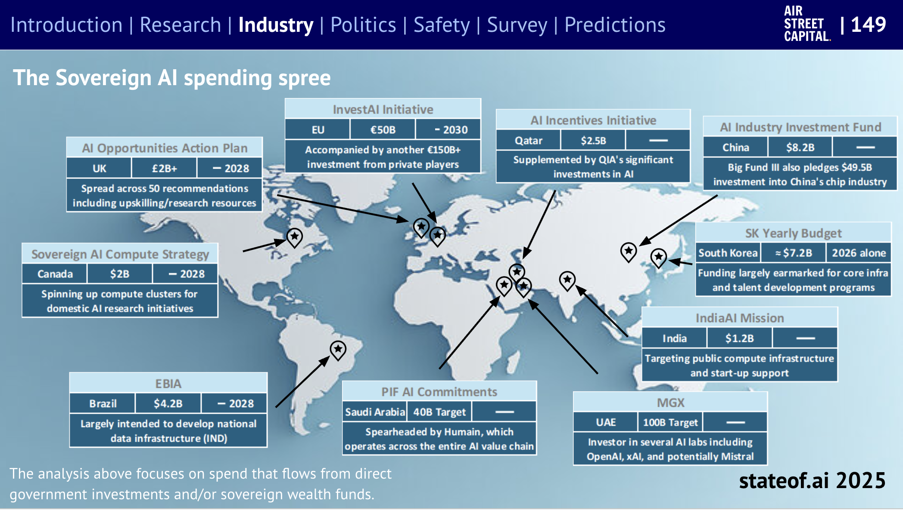
AIの軍事利用も急速に進んでいる。米国防総省はAIプラットフォームへの投資を拡大し（p.228-230）、自律型兵器やドローン群（swarming）の開発を加速させている（p.230）。欧州もウクライナ情勢を受け、AI防衛力の強化に乗り出した（p.231）。
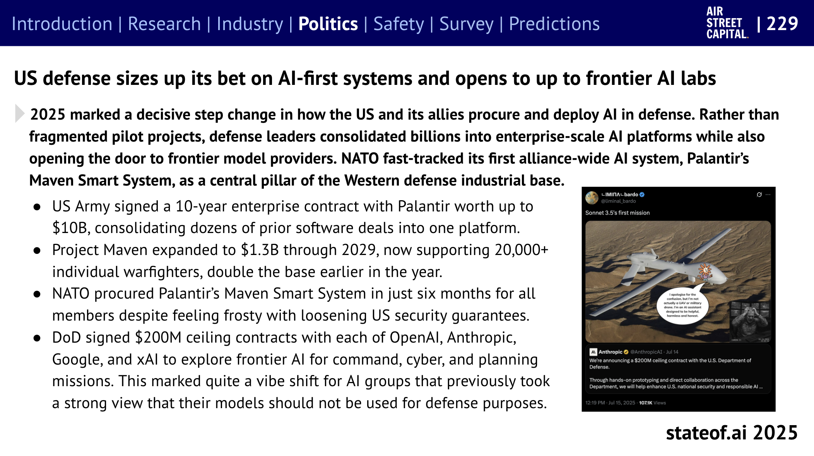
セーフティ：対策強化と新たな懸念
大手AIラボは、生物兵器開発やサイバー攻撃といったリスクの高い領域に対し、これまでにないレベルの安全対策を導入し始めた（p.251-252）。特にAnthropicとOpenAIは、予防的なアプローチを強めている（p.252）。
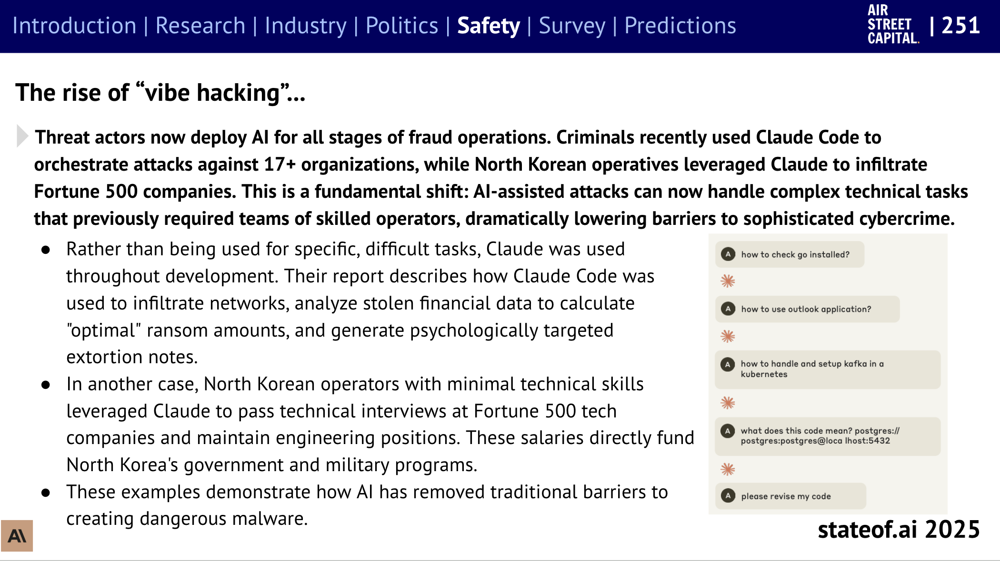
しかし、外部のAI安全研究機関の予算規模は、AIラボの支出に比べて桁違いに小さく（p.246）、独立した立場からの検証や監視体制は依然として脆弱だ。
AIによるインシデント報告は増加傾向にあり、特に生成AI関連のものが急増している（p.247-249）。サイバー攻撃能力に関するAIの進化は特に速く、5ヶ月で倍増しているとの分析もある（p.249）。実際に、AIを利用した高度なサイバー犯罪も報告され始めている（p.250）。
モデルの「個性」や「振る舞い」を内部表現から理解しようとする解釈可能性（Interpretability）の研究は進展を見せているが（p.253-254）、モデルが意図的に人間を欺く「Alignment faking」（p.262-264）や、特定の有害な学習データから予期せず広範な悪意のあるペルソナを獲得してしまう現象（p.265-267）など、根深い課題も明らかになっている。訓練データ自体が自己成就的に危険なAIを生み出す可能性（p.268）や、モデルが隠れたシグナルを通じて望ましくない特性を伝播させる可能性（p.269）も指摘されている。
AIとの対話が人間の精神衛生に悪影響を及ぼす「AI精神病（AI psychosis）」の事例も報告されており（p.256）、新たな社会的課題となりつつある。
サーベイ：AIは仕事と生活に浸透、生産性を向上
今回初めて実施された1,200人規模のAI利用状況調査からは、AIが既に多くの人々の仕事や私生活に深く浸透している実態が浮かび上がった。
- 95%以上が仕事や私生活で生成AIを利用（p.284）。
- 76%が自費で有料サービスを利用しており、その有用性が認識されている（p.284）。
- 92%が生産性向上を実感。特に有料ユーザーほどその傾向が強い（p.285）。
- 主な利用目的は、生産性向上、コーディング支援、リサーチ。多くの場合、従来の検索エンジン（特にGoogle）を代替・補完している（p.286）。
- 驚きをもって迎えられたのは、コーディング能力の飛躍的向上、メディア生成（画像、動画、音声）の質の劇的改善、そして深いリサーチ・分析能力（p.287）。
- ツールの乗り換えも活発。特にコーディング分野では、Claude CodeやCursorへの移行が見られ、GitHub CopilotやChatGPTからの離脱が起きている。一方で、ChatGPT、Claude、Geminiといった主要プラットフォームへの集約も進んでいる（p.288）。
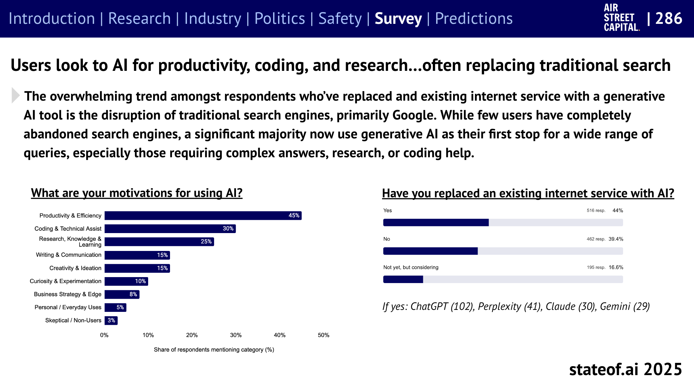
予測：エージェント、地政学、そして社会への影響
レポートでは、今後12ヶ月の予測も10項目挙げられている（p.304）。
- 主要小売業者でAgentic Checkout経由の売上が5%超え、AIエージェント広告費は50億ドルに。
- 主要AIラボが米政権へのアピールのためにフロンティアモデルのオープンソース化に回帰。
- オープンエンドエージェントが科学的発見をEnd-to-Endで実現。
- ディープフェイク/エージェント駆動型サイバー攻撃がNATO/国連の緊急議論を初誘発。
- リアルタイム生成ビデオゲームがTwitchで年間最多視聴タイトルに。
- Sovereign AI開発に失敗/断念する国々で「AI中立性」が外交ドクトリンとして浮上。
- AIを多用した映画/短編が観客から絶賛されつつ大きな反発も招く。
- 中国のラボが主要リーダーボードで米国ラボを追い抜く。
- データセンターNIMBYismが米国を席巻し、2026年の中間/知事選に影響。
- トランプ大統領が州のAI法を禁止する大統領令を出し、最高裁で違憲判決。
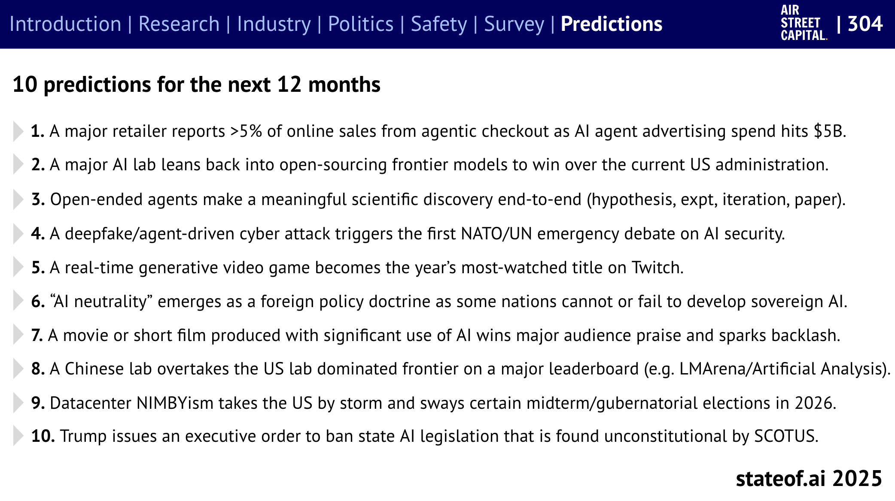
これらの予測が当たるかどうか、一年後の答え合わせが楽しみだ。
まとめ
State of AI Report 2025は、AIが単なる技術トレンドから、経済、政治、社会のあらゆる側面に影響を及ぼす基盤技術へと移行しつつあることを改めて示した。性能向上は依然として続いているが、その応用範囲の拡大、地政学的な競争激化、そして電力供給や社会受容性といった新たな課題の顕在化が、2025年のAIを巡る状況を複雑にしている。特に、推論能力の向上とそれを活用したエージェント技術の進展、米中間の覇権争いの行方、そしてAIの社会実装に伴うリスク（安全性、雇用、公平性など）にどう対処していくのかが、今後の焦点となるだろう。